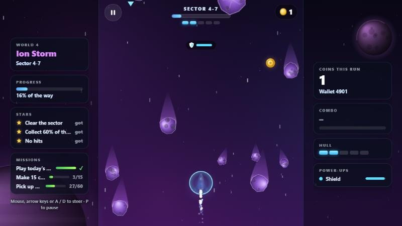
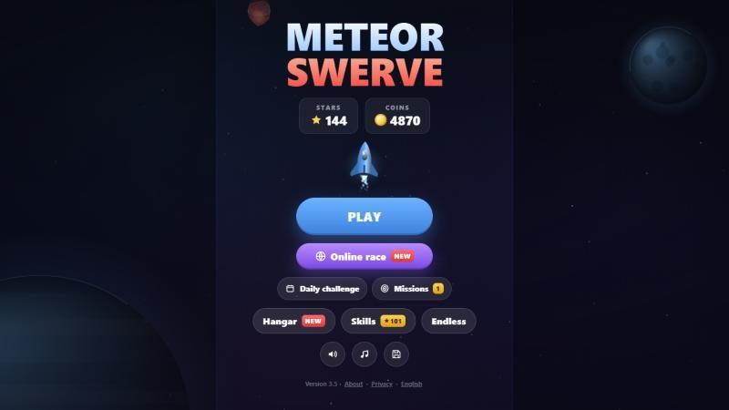

Home › How to play
How to play Meteor Swerve
Everything a new pilot needs to know: how to steer, what happens when you get hit, how close calls turn into big coin payouts, and how the stars in each sector are won.
The goal
You fly a small ship at the bottom of the screen while a meteor storm pours down from the top. You can't shoot and you can't slow down; the only thing you control is where your ship sits from left to right. Your job is to keep it out of the way of everything that falls, for as long as the current mode asks.
In the campaign, every sector has a timer. Stay in one piece until the timer runs out and the sector is cleared. Each world's last sector is a boss fight: a huge enemy sits at the top of the screen and throws attacks at you. Its health bar is really a clock, so you win by outlasting it, not by damaging it.
Controls
Meteor Swerve works with touch, a mouse or a keyboard, and you can switch between them at any time.
| Device | How to steer | Other controls |
|---|---|---|
| Phone or tablet | Put a finger anywhere on the screen and drag left or right. The ship copies your finger's sideways movement (a little faster than your finger), so you can steer from the bottom corner without covering the ship. | Tap the buttons on screen. The pause button sits in the top corner. |
| Computer, mouse | Move the mouse left and right. The ship flies to the same spot across the screen as the pointer. | Click the buttons. |
| Computer, keyboard | ← → or A D. On French keyboards Q D work too. | Space or Enter starts a run, P pauses. |
Touch steering is relative: what matters is how far your finger moves, not where it is. Small, smooth movements work much better than big swipes. If you find yourself overshooting, try steering with short strokes of your thumb.
Tip: on a computer the mouse is the most precise way to play, because the ship goes exactly where you point. The keyboard is better for long runs if your wrist gets tired.
Your hull
The row of cells under your score is your ship's hull. Every hit from a meteor, a shard, a laser or a UFO's shot costs one cell. When the last cell is gone, the ship is destroyed and the run ends.
- Ships start with different amounts of hull: the starter Comet has one cell and the strongest ship has five. You can add more with the Armor plating upgrade and with skills from the star tree.
- After a hit your ship blinks for about a second and a half. While it blinks, nothing can hurt it, which gives you time to get clear of whatever hit you.
- A hit also breaks your close-call combo, so it costs you coins as well as hull.
The ship's hitbox is a little smaller than the drawing of the ship. That is on purpose: it means a rock that only brushes the tip of a wing usually counts as a close call, not a hit.
Close calls and combos
When a meteor passes very close to your ship without touching it, you get a close call. The game shows “CLOSE!” next to your ship and pays a bonus coin.
Close calls made within two and a half seconds of each other form a combo. Each new close call in the chain is worth more than the last: the second pays double, the third triple, and so on up to ×10. The chain ends if you go more than two and a half seconds without a close call, or the moment you take a hit.
This is the heart of Meteor Swerve. Playing it safe in the middle of the screen will clear sectors, but the players with full hangars are the ones who learn to graze the rocks on purpose. Skills in the star tree can stretch the combo window, raise the cap to ×15 and double what each close call pays.
Coins
Coins fall through the storm on their own, sometimes one at a time and sometimes in lines or curving trails. Touch a coin to collect it. You also earn coins from:
- Close calls, as described above.
- Clearing a sector. Every sector pays a bonus that grows the further you are in the campaign, and boss sectors pay double. Each new star you win adds 10 coins times the world's number. Replaying a sector you have already cleared pays half the usual bonus.
- Blasts: every rock a Blast destroys is worth a coin.
- Races, missions and the daily bonus, covered in their own guides.
Coins are spent in the Hangar on new ships, engine trails, upgrades and star guards. See the ships, upgrades and skills guide for what to buy first.
Power-ups
Glowing power-up icons drift down the screen every so often. Fly into one to use it straight away.
| Power-up | What it does | Lasts |
|---|---|---|
| Shield | A bubble around the ship that blocks the next hit. A blocked hit doesn't cost hull and doesn't count against the no-hit star. | 12 s |
| Magnet | Pulls nearby coins to your ship, so you can collect a whole trail without chasing it. | 9 s |
| Slow-mo | Slows the storm down while the sector timer keeps running at full speed. Perfect for getting through a crowded patch. | 5 s |
| Blast | Destroys every danger on the screen at once and pays a coin for each rock. | instant |
Power-up times grow with the Power cells upgrade, with the Nova and Starlight ships and with the Long Fuse skill.

Sectors and stars
The campaign is split into 6 worlds of 8 sectors: seven normal sectors and a boss. A normal sector lasts between about half a minute and a minute and ten seconds, getting longer as you go. Boss fights last a minute or more. Each sector has three stars to win:
- Clear it: survive until the timer runs out.
- Collect the coins: pick up at least 60% of the coins that fall during the sector.
- No hits: clear it without losing any hull.
You don't need all three at once. Stars you have won stay won, so you can come back later just for the coins or just for a clean run. The sector-clear screen shows which stars you got. On a wide screen, the panel beside the play area also tracks all three while you fly, including the share of the coins you have picked up so far.
Stars matter in three ways. Later worlds need a certain number of stars to open (see the worlds guide). Every star is also a point to spend in the skill tree. And collecting 120 stars unlocks the Starlight, the best ship in the game, while all 144 unlock the Stardust engine trail.
Star guards protect the no-hit star. When you start a sector whose no-hit star you still need, one of your star guards comes along and blocks the first hit. You can buy them in the hangar for 100 coins, and you also get them from the daily bonus and from finishing all three daily missions.
Game modes

Campaign
Press Play on the menu to open the map. Pick any open sector; the next one opens when you clear it. When you lose, the game shows how far through the sector you got and a tip for the world you are in.
Endless
One run with no timer. The storm starts gently and keeps getting faster and thicker, and the dangers from each world join in one by one: comets after about half a minute, then splitting ice, lasers, black holes and finally UFOs. Your score grows with every second you survive, every coin and every close call.
Online race
Race two or three other pilots, or the computer, through the same storm. The last ship flying wins. Read the online races guide for the details.
Daily challenge
One storm per day that is the same for everyone. Survive as long as you can and try to beat your own best time. The daily challenge guide explains it, along with missions and the daily bonus.
Saving your progress
Meteor Swerve saves automatically in your browser's storage on your device. There is no account and nothing is sent to a server. That has two consequences worth knowing:
- Clearing your browser's data for the site, or using a private window, starts you from scratch.
- Each browser keeps its own save. On iPhone, the home-screen app and Safari count as two different browsers.
To move your progress, or to keep a copy, tap the save icon at the bottom of the menu. It shows a backup code you can copy into your notes. Paste that code into the same screen on another phone or browser and press Restore this code to bring everything across: coins, stars, ships, trails, upgrades and skills.
Sound and language
The speaker and music-note buttons on the menu and the pause screen switch sound effects and music on and off separately. The game is available in English, Spanish, Portuguese, French, German and Hebrew. It picks your browser's language the first time you play, and you can change it with the language button at the very bottom of the menu.
Try it now
The first sectors are gentle, so you can learn the controls as you go.
Play Meteor Swerve